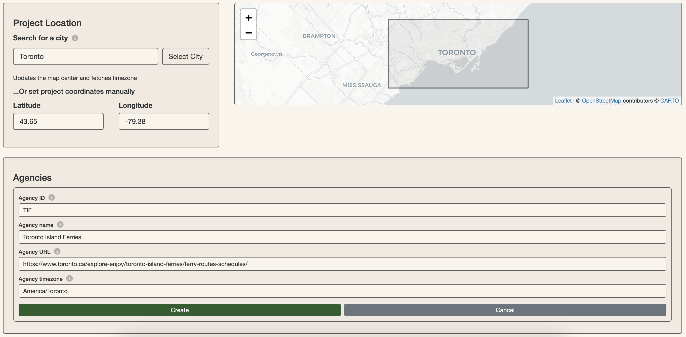
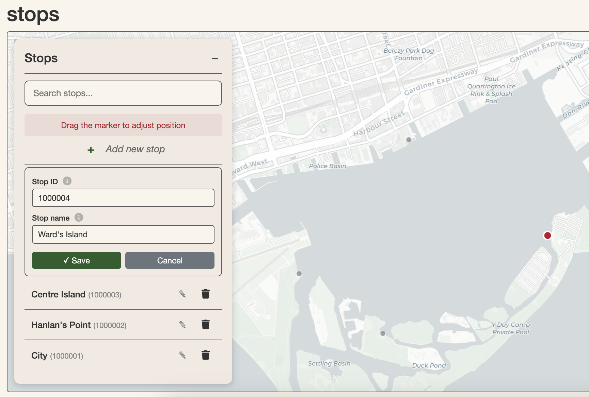
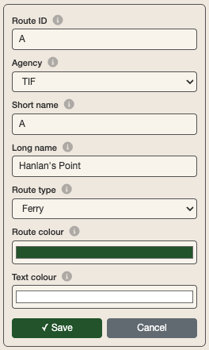
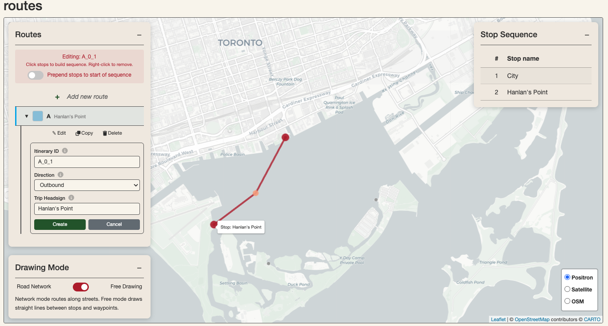
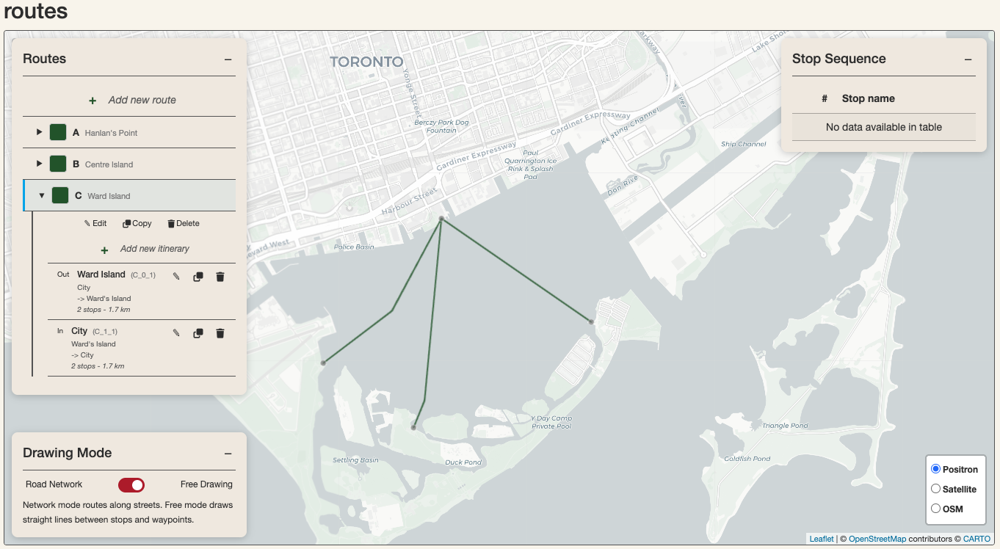
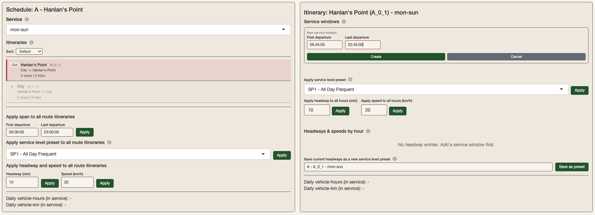
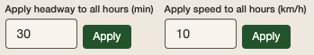
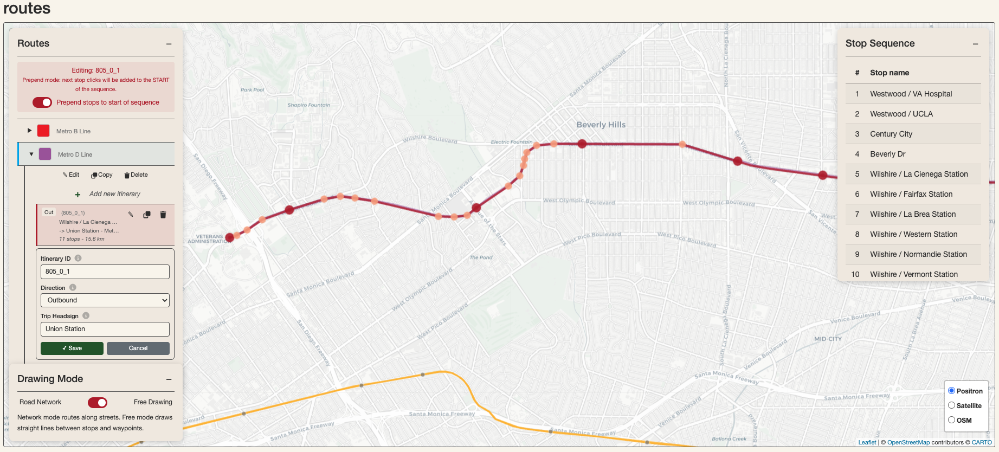

croquis can be used to produce GTFS (General Transit Feed Specification) for planning and research purposes within minutes. This is possible thanks to the Simplified Speed and Frequency Specification (SSFS) data structure that this package introduces (read more in the SSFS vignette).
This vignette is a walkthrough for producing a GTFS with the Croquis
Shiny app. It introduces the basic functionalities of the app as well as
how they work. It covers how to produce a GTFS from scratch or by
uploading an existing one, either using the croquis() Shiny
App or by using in-package functions including
gtfs_to_ssfs(),ssfs() and
ssfs_to_gtfs().
Producing a GTFS from scratch
To launch the Croquis Shiny app, run:
croquis()You can produce a GTFS entirely using the Shiny app and without any code other than the line above. For the sake of demonstrating how the app builds transit networks and schedules in the back-end, this vignette also demonstrates how to use the base functions in croquis to build a simple GTFS in your R console without the Shiny App. The Shiny app is, in essence, a wrapper of these base functions.
For this demonstration, we will build a toy GTFS for Toronto Island Ferries based on its summer 2026 schedule.
Getting started: setting agency details
On the Home page of the Shiny App, set the project location by
searching for a city or setting the coordinates manually. For the
Toronto Island Ferries, you can search for “Toronto” in the
Search for a city input and click Select city.
This will center the map on the desired region in the other modules to
make network modification easier. Provide agency details by clicking
+ Add new agency in the Agencies panel. Fill out these
details and click “Create”. This information will all be passed on
directly to the final GTFS.

Create agency details in the Croquis Shiny app.
Using the croquis base functions, you can initialize your transit network model by creating a skeleton SSFS and modifying the agency table directly:
ssfs_tif <- ssfs()
# add agency details
ssfs_tif$agency <- data.frame(
agency_id = "TIF",
agency_name = "Toronto Island Ferries",
agency_url = "https://www.toronto.ca/explore-enjoy/toronto-island-ferries/ferry-routes-schedules/",
agency_timezone = "America/Toronto"
)Creating stops
The Toronto Island Ferries network consists of four stops: City (Jack
Layton Ferry Terminal), Centre Island, Hanlan’s Point and Ward’s Island.
In the app, go to the Stops module to create them by clicking
+ Add new stop in the left hand panel, then clicking on the
desired location and providing a stop name for each. The app
automatically generates stop ids, which you can overwrite if you wish to
provide your own.

Create stops in the Shiny app.
Manually, you could also add these stops to the SSFS as an sf in the R console:
# add stops
ssfs_tif$stops <- sf::st_sf(
stop_id = c("CT", "CI", "HP", "WI"),
stop_name = c(
"City",
"Centre Island",
"Hanlan's Point",
"Ward's Island"
),
geometry = sf::st_sfc(
sf::st_point(c(-79.37517, 43.6402)),
sf::st_point(c(-79.37844, 43.62245)),
sf::st_point(c(-79.38905, 43.62791)),
sf::st_point(c(-79.35771, 43.63139)),
crs = 4326
)
)Creating routes and itineraries
The Toronto Island Ferries network consists of 3 routes: one connecting the city with each of the three other stops. Each one of these routes consists of two itineraries (these could otherwise be referred to as variants or patterns): an outbound itinerary to the islands, and an inbound itinerary to the city.
In the Shiny app Routes module, create the 3 routes by clicking
+ Add new route in the left-hand panel and providing
details for each, including route type and colour.

Producing route details for the Hanlan’s Point route.
Once any of your routes are created, you can then create route
itineraries on the map by clicking on + Add new itinerary,
which appears under every route in the left-hand menu when expanded. In
editing mode, click on the first stop of your itinerary to start. Then,
click on the next stop of your route itinerary. This adds it to the stop
sequence. You can continue to click on stops to add them to the stop
sequence of your itinerary until the desired terminus. You can also
create waypoints by clicking elsewhere on the map other than stops. You
may also switch between Road Network and
Free Drawing Drawing modes while creating your route
itinerary, which determines how stops and waypoints are connected:
either along the road network using OSRM or by connecting
nodes directly. To delete a stop or waypoint from a route itinerary,
right-click on it. Hitting backspace on your keyboard will
delete the last stop in the stop sequence.
In our Toronto Island Ferries example, each route itinerary only
consists of two stops. Since we selected Ferry as the route
type in creating our routes, Free Drawing is automatically
selected.
Before finishing your route itinerary, ensure that you have assigned
it a Trip Headsign.

Creating the outbound itinerary for the Hanlan’s point route. A waypoint is in between the City stop and the Hanlan’s Point stop to add detail to the path.
The Toronto Island Ferries model should consist of 6 itineraries total: 2 for each of the 3 routes. Your network should appear as follows in the Routes module when finished with this section:

Routes module after producing all the Route and Itinerary details for the Toronto Island Ferries network.
The Routes module of the Shiny app simultaneously manages 3 of the SSFS tables: routes, itin, and stop_seq. Below is a demonstration of how we could accomplish the same thing we did in the Shiny app in the console by modifying the SSFS:
# Routes table (this info is passed onto the final GTFS)
ssfs_tif$routes <- data.frame(
route_id = c("A", "B", "C"),
agency_id = c("TIF", "TIF", "TIF"),
route_short_name = c("A", "B", "C"),
route_long_name = c("Hanlan's Point", "Centre Island", "Ward Island"),
route_type = c(4L, 4L, 4L),
route_color = c("2B5D2C", "2B5D2C", "2B5D2C"),
route_text_color = c("FFFFFF", "FFFFFF", "FFFFFF")
)
# create itin table
city <- sf::st_coordinates(ssfs_tif$stops[ssfs_tif$stops$stop_id == "CT", ])
hanlans <- sf::st_coordinates(ssfs_tif$stops[ssfs_tif$stops$stop_id == "HP", ])
centre <- sf::st_coordinates(ssfs_tif$stops[ssfs_tif$stops$stop_id == "CI", ])
wards <- sf::st_coordinates(ssfs_tif$stops[ssfs_tif$stops$stop_id == "WI", ])
ssfs_tif$itin <- sf::st_sf(
itin_id = c("A_0_1", "A_1_1", "B_0_1", "B_1_1", "C_0_1", "C_1_1"),
route_id = c("A", "A", "B", "B", "C", "C"),
direction_id = c(0L, 1L, 0L, 1L, 0L, 1L),
trip_headsign = c(
"Hanlan's Point", "City",
"Centre Island", "City",
"Ward's Island", "City"
),
geometry = sf::st_sfc(
sf::st_linestring(rbind(city, hanlans)),
sf::st_linestring(rbind(hanlans, city)),
sf::st_linestring(rbind(city, centre)),
sf::st_linestring(rbind(centre, city)),
sf::st_linestring(rbind(city, wards)),
sf::st_linestring(rbind(wards, city)),
crs = 4326
)
)
# Make stop_seq table
ssfs_tif$stop_seq <- data.frame(
itin_id = c(
"A_0_1", "A_0_1", "A_1_1", "A_1_1",
"B_0_1", "B_0_1", "B_1_1", "B_1_1",
"C_0_1", "C_0_1", "C_1_1", "C_1_1"
),
stop_id = c(
"CT", "HP", "HP", "CT",
"CT", "CI", "CI", "CT",
"CT", "WI", "WI", "CT"
),
stop_sequence = rep(c(1L, 2L), 6),
speed_factor = rep(1.0, 12)
)Creating the schedule
In the Schedule module of the Shiny app, you can specify schedule details for each route and itinerary.
The Toronto Island Ferries offers the same service Monday through Sunday throughout the summer. Each route and route itinerary has distinct headways (intervals between trips) as well as spans (time of first and last departure).
After selecting a route in the map panel, a route-level schedule and
service cost overview appears in the schedule editing panel below on the
left. The Shiny App automatically generates a Monday-Sunday service and
selects it. You can manage the calendar table, including start and end
dates, by clicking Configure service calendar in the
bottom-left corner of the Schedule module. For our Toronto Island
Ferries example, the automatically-generated service serves us
perfectly.
By selecting one of the itineraries, its details load on the
right-side panel. Start by defining a service window by clicking
+ Add new service window. For the Hanlan’s Point outbound
itinerary departing from the city to Hanlan’s point, the first trip is
at 6:45 and the last one is at 22:45.

Creating a service window for the outbound itinerary of the Hanlan’s point route.
Creating a service window initializes the headway and speeds by hour table below. You can batch apply headways and speeds by using the buttons above it. The Hanlan’s Point route essentially runs a 30-minute headway service all-day in both directions, so we can apply this headway to all hours. The 2km journey in either direction takes about 10-15 minutes, so we can apply a 10 km/h speed to all hours.

Batch apply headways and speeds to a selected itinerary and service when an itinerary has been created.
Repeat this process for the inbound itinerary of this route as well as for the itineraries of the other two routes.
The Schedule module simultaneously manages the
span,hsh, and calendar tables of
the SSFS. Below is a demonstration of how we would achieve the same
result by building the SSFS in the console instead of in the Shiny
app:
# Make calendar table
ssfs_tif$calendar <- data.frame(
service_id = "mon-sun",
monday = 1, tuesday = 1, wednesday = 1, thursday = 1, friday = 1, saturday = 1, sunday = 1,
start_date = "2026-05-13",
end_date = "2026-09-15"
)
# Make spans table
ssfs_tif$span <- data.frame(
itin_id = c(
"A_0_1", "A_1_1","B_0_1", "B_1_1", "C_0_1", "C_1_1"
),
service_id = rep("mon-sun",6),
service_window = rep(1, 6),
first_dep = c("06:45:00","07:00:00","08:00:00","08:15:00","06:30:00","06:45:00"),
last_dep = c("22:45:00","23:00:00","23:30:00","23:45:00","23:30:00","23:45:00")
)
# Make headways and speeds by hour table
ssfs_tif$hsh <- data.frame(
itin_id = rep(
c("A_0_1", "A_1_1", "B_0_1", "B_1_1", "C_0_1", "C_1_1"),
times = c(17, 17, 16, 16, 18, 18)
),
service_id = "mon-sun",
hour_dep = sprintf("%02d:00:00", c(
6:22, 7:23, 8:23, 8:23, 6:23, 6:23
)),
headway = 30L, # This simplifies trip departure intervals relative to reality.
# You can use a rep(c(headway,n),c(headway,n)...) pattern to be more precise
speed = 10
)Exporting the GTFS
Once you have finished creating stops, routes and a schedule, you can
export your croquis project to GTFS by clicking on the save (floppy
disk) icon in the navigation bar of the Shiny App and clicking
Download GTFS. You can optionally rename your exported GTFS
file or choose to include shape_dist_traveled in your output GTFS before
clicking Download GTFS.
Exporting a GTFS works by calling the ssfs_to_gtfs()
function and using gtfstools::write_gtfs(). In workflows
that don’t involve the Shiny App, you can create a GTFS using this
function as follows:
# create the GTFS from the SSFS
gtfs_tif <- ssfs_to_gtfs(ssfs_tif)
# to export the GTFS from your R environment, you can use a function such as gtfstools::write_gtfs()
gtfstools::write_gtfs(gtfs_tif,"gtfs_tif.zip")Producing a GTFS based on an existing one
Using the Croquis Shiny app, you can upload any GTFS on the home page
(in Load Network) in order to edit routes and schedules and
export a new GTFS. Uploading a GTFS into the app will convert the GTFS
to an SSFS, using gtfs_to_ssfs(). The SSFS retains many
critical details of the original GTFS, including how service levels vary
throughout the day and how speed varies across route segments and time
of day. It is important to be aware that other details, for example
specific stop times and non-mandatory GTFS tables including fares, will
be lost in the conversion.
This section demonstrates how to modify an existing network and export a scenario GTFS in the Croquis Shiny app with an example based on the Metro D Line extension in Los Angeles, planned for 2027. You can download a 2026 version of the LA Metro rail GTFS from the MobilityDatabase.
It also demonstrates how to modify an existing schedule GTFS using Croquis functions within the console.
In the Croquis Shiny app
Run the app with croquis() and upload the LA metro GTFS
in the Load Network panel of the Home module. There are 4
new stations of the Metro D Line in the planned extension: Beverly Dr,
Century City, Westwood / UCLA and Westwood / VA Hospital. Our first step
is to add them. Navigate to the Stops module. You will see that all the
stations of the LA metro rail network are already loaded. Add the four
new stations in the same way we would add stops if we were building the
network from scratch (see the previous section).
The only other thing we need to do is extend the route itineraries
for Metro Line D to Westwood / VA Hospital. For the variant that starts
at Union Station and ends at Wilshire / La Cienaga, this is
straightforward: in the Routes module, click on Metro Line D in the
left-hand routes panel to expand and view the itineraries. Click on the
pencil icon associated with the itinerary that starts at Union Station
and ends at Wilshire / La Cienaga. This will activate editing mode for
this itinerary. Click on the map to extend the itinerary with waypoints
along Wilshire Boulevard toward Beverly Drive. Click on the Beverly Dr
station to add it to the itinerary stop sequence. Continue in this way
until you have extended the line to Westwood / VA Hospital, adding the
other new stations to the stop sequence along the way. Click
Save in the left-hand routes panel to confirm your
edits.
For the itinerary that starts at Wilshire / La Cienaga and ends at Union Station, you will need to activate prepend mode in order to add stops to the beginning of the sequence instead of at the end. The prepend mode toggle appears once you activate editing mode with the pencil icon. Activate prepend mode and click on the stops towards Westwood / VA station to connect them first with straight lines. Then, you can click along the route to add waypoints. You can move them by clicking on them again once they have been created and clicking on the desired spot or dragging them there.

Extend both inbound and outbound itineraries to the new terminus at Westwood / VA Hospital. For the Eastbound itinerary, activate prepend stops mode to add stops to the start of sequence instead of at the end.
For this example, modifying the schedule details is optional if we
want to preserve the same level of service in the output GTFS. Click on
the save icon and export the GTFS. The ssfs_to_gtfs()
function that runs in the background will take care of generating new
stop times that reflect the extension, taking into account the headways
of the original GTFS, the average speeds by hour of the original GTFS,
and the distance between the new stations along the newly-drawn
extension.
In the R console
Croquis includes several helper functions, like
gtfs_retain_routes() and ssfs_subset(), that
facilitate hybrid workflows with existing GTFS, scenario SSFS, and the
Croquis Shiny app. Below is one example with the LA Metro E Line. The
goal of this demonstration will be to create a scenario GTFS for this
line where speeds are increased by 30% to 40 km/h (they are currently at
32 km/h most of the day) and service frequency is increased to a
5-minute headway at peak.
First, load the GTFS into the R environment using
gtfstools:
#path to a 2026 version of the GTFS Schedule for LA Metro (rail) hosted on the MobilityDatabase
path_gtfs <- "https://files.mobilitydatabase.org/mdb-30/mdb-30-202608230057/mdb-30-202608230057.zip"
gtfs_lametro <- gtfstools::read_gtfs(path_gtfs)It is useful to isolate the route that we want to edit from the rest
of the GTFS before converting it to SSFS. This allows the rest of the
GTFS to be conserved as-is. We can use gtfs_retain_routes()
to isolate Metro E Line and gtfs_remove_routes() to create
a reference GTFS for the rest of the lines.
# First, identify the route id associated with Metro E Line
route_id_e_line <-
gtfs_lametro$routes$route_id[gtfs_lametro$routes$route_long_name == "Metro E Line"]
# Create a subset GTFS with only Metro E Line
gtfs_e_line_ref <-
gtfs_retain_routes(gtfs = gtfs_lametro,retain_routes = route_id_e_line)
# Create a reference GTFS for the rest of the network
gtfs_ref_no_e <-
gtfs_remove_routes(gtfs = gtfs_lametro,remove_routes = route_id_e_line)Convert the subset GTFS for the E Line to an SSFS in order to then apply the operations to improve speeds and headways on weekdays and convert the modified SSFS to a GTFS. This GTFS can then be used as an input in various analyses that evaluate the costs and benefits of this change, including on travel times and accessibility which can be evaluated with r5r.
# Convert E Line GTFS to SSFS
ssfs_e_line <- gtfs_to_ssfs(gtfs = gtfs_e_line_ref)
# Increase speeds to 40 km/h
ssfs_e_line$hsh$speed <- 40
# Reduce headways to 5 minutes at peak on weekdays
mod_idx <- which(
ssfs_e_line$hsh$service_id == "mon-fri" &
ssfs_e_line$hsh$hour_dep %in% c("06:00:00","07:00:00","08:00:00","15:00:00","16:00:00","17:00:00"))
# apply 5 minute headway to affected rows in the hsh table
ssfs_e_line$hsh$headway[mod_idx] <- 5
# At any point, load the ssfs_e_line model into the Croquis Shiny App to make changes in the app if desired
# croquis(ssfs = ssfs_e_line)
# Convert modified E Line SSFS back to GTFS
gtfs_e_line_prop <- ssfs_to_gtfs(ssfs_e_line)
# Write new E Line GTFS and reference GTFS without the E line using {gtfstools}
gtfstools::write_gtfs(gtfs_e_line_prop,"gtfs_e_line_prop.zip")
gtfstools::write_gtfs(gtfs_ref_no_e,"gtfs_ref_no_e.zip")